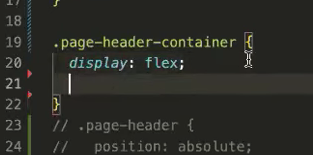
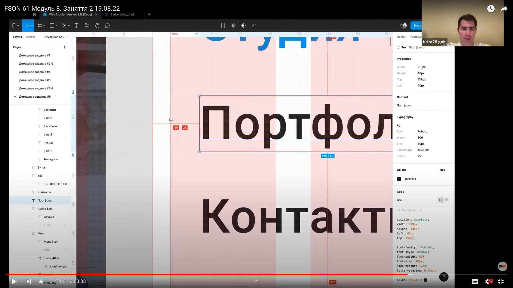
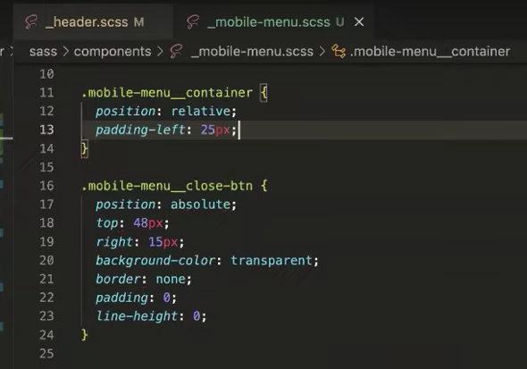
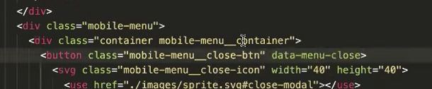
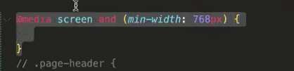
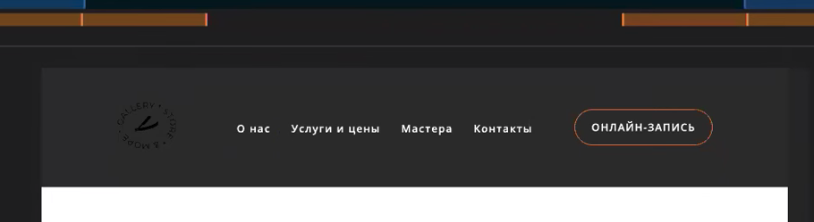

Модуль 8-2
FSON 61 Модуль 8. Заняття 2 19.08.22
Модуль 8 - Занятие 16 - Адаптивная графика ... і т д
Під різні монітори (щільність пікселів):
Теорія:
Хтось зроузміє це, хтось це, хтось це))):
Воно перевіряє, яка щільність на моніторі у користувача
Якщо 2 і більше - то для браузера ось це зображення:
А звичайне зображення:
ось він зайшов на 1пкс монітор завантажується
якщо піксельна щільність 2 завантажується
Для різних пристроїв
І так далі:
Атрибут ЕсЕрСі сет
шлях до зображення + для якого монітора (вказуємо дескриптор 1х або 2х або 3х)
Через кому

Звичайний ЕсЕрСі також вказуємо
По-перше = Браузер замість нього потім ставить зображення відносно щільності
По-друге не всі браузери знають, що таке ЕсЕрСіСет )))
Готуємо зображення різних розмірів:
При Експорті у Фігмі вказуємо якого розміру потрібні зображення:
Маємо три різні зображення для різних пристроїв:
Пікчер сам по собі не існує - в середину тегу вставляємо зображення
Додаємо Соурс (бо із соусом смачніше)))) )
Насправді = за допомогою соурсу, ми можемо розширити функціонал нашого зображення
Є такий атрібут, як медіа
Додаємо ЕсЕрСіСет і... МАГІЯ:
Є формат ВебПі. Не всі Браузери підтримують
Але для тих, які підтримують - потрібно "давати"
Конвертуємо у сквоші:
Якщо формат ВЕБПІ = ! то! обов'язково вказати тип:
І ми дублюємо якщо браузер підтримує вебрі, то візьме з цього соурусу (зверху)
якщо ні то з цього (знизу)
Ось така магія:
Зараз зробимо з цього контейнера напів респонсів і напів адаптів (полу-лошадь-полу-шлюз)
Ширину змінюємо на відсотки
марджини видаляємо = бо розтягнеться на ширину елементу
Створюємо медіа скрін і тепер...
Якщо ширина вйью потрта 480 і більше...
... то ми його фіксуємо
... Бо дизайнер показав у фігмі ширину 480 пк:
Тайм-код пояснення:
Для інших пристроїв
Щоб меню використовувалося тільки на мобільнийх пристроях:
... а саме:

+ на планшетах також немає телефонів і кнопки (дякуючи Богу і діспплей НОН )))) )
Всього того немає - тільки Бургер... Омномном:
А коли розтягуємо - вся цю "хрєнь" з'являється... Мейджік! )))

Пофлексимо?
Маємо один за одним:
Додаємо флекс:
Трохи чаклунства...
Оба на
Маємо ще відступи:
Хвилинка каламбуру: Відступ-Бідструп:
Додаємо розміри:
Прописуємо стилі для кнопки:
Шо там по меню?
Ми зробимо менюшку, схожу на нашу:
Робимо елемент
Виймаємо з потоку (позішн фіксед):
Винесимо зедіндексом шар наперед:
Додаємо хрестик
Створюємо список:
Кнопка для закривання:
Позіціонуємо через Абсолют:
Ось так:
Далі:
Створюємо дів конетйнер:
І в нього перекидаємо все::
Додаємо клас мобайл-меню__контейнер:
Тепер хрестик і меню в середині цього контейнеру::
У нас у контейнера ніякого Позішина немає
Тому він позиціонується від Мобайл-меню
Тому ми задаємо йому позішн Релетів:
Тепер позиціонується від контейнеру і коли ми змінюємо ширину - все працює:
Але за макетом наша кнопка притискається до контентної частини:
А у нас:
Тому:
Маємо:
Наш контент відступає від контейнера на 25 пікселів:
Тому:

Далі:
Додаємо падінг топ 48 і паддінг боттом 58:
Маємо:
Створюємо джава-скріпт:
Додаємо до хетемелю:
Щоб воно працювало, додаємо:
Так само:
Додаємо Дата-Меню:
І описати в стилях клас із-опен:
Тому:
Ота стрічка внизу = її треба затемняти, щоб не випадав контент:
Створюємо тінь:
Маємо:
Планшет
Далі для планшету:
В макеті:

Це медіа-правило для планшету:
На планшеті є все, окрім кнопочки бургера:
Тому всі стилі для мобільних пристроїв копіюємо в медіа-правило для 767:
Тепер ні в одного елемента в цій лішці немає стилів
... і вони на планшет не затягнуться:
А для планшета просто вказуємо дісплей НОН :
Тепер мобільних стилів на планшеті немає:
Прибираємо бургер:
Магія:
Далі:
Флексимо:

Стилі:
Маємо:
Відступ від логотипу:
Є:
Додаємо Бекграунд:

Для декстопу додаємо всі стилі, що в коментарях (вони вже були прописані):
Невеличка корекція = спейс-бітвін = не потрібен:
Потрібен флекс-старт:
Дісплей флекс та елайн айтім центр = прибираємо::
Шось прибираємо + шось залишаємо... Тайм-код для відео (довго описувати):
Маємо:

Тіпа все )))